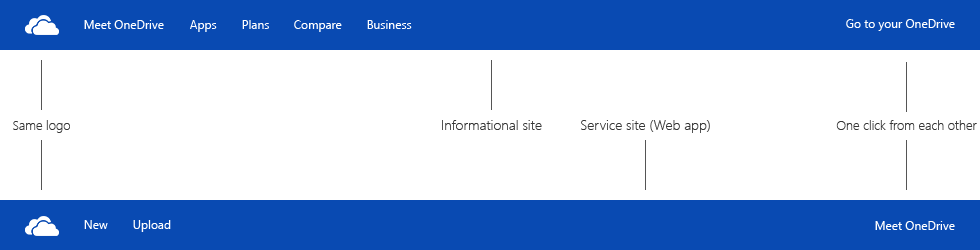

casey penk
one microsoft.com
The "One Microsoft" vision has succeeded in many ways:
- Major Microsoft products now have a similar look and feel
- Employees are collaborating more
- The company is realistic about the challenges and opportunities of the modern world
- Yet Microsoft websites are trapped in siloes
It's time for One Microsoft.com
GOALS
- Unify the appearance and functionality of Microsoft websites
- Make it easy to move between Microsoft websites
- Unify the appearance and functionality of Microsoft-wide services, especially search and support
- Bridge the gap between Web apps and Windows 8 Modern apps
- Strengthen Microsoft's overall identity while preserving the identities of units such as Xbox and Skype
THE PROBLEM
Microsoft websites have no consistent identity. OneDrive, Skype, Surface, Xbox, Windows, and others feel like disparate experiences from different companies. This reflect Microsoft's historical silo mentality, which broke up their products into separate groups that competed with one another. The "One Microsoft" vision seeks to change this, but it has been a work in progress.
The current situation presents Microsoft as a disorganized mess. Every site has its own identity (branding and design language) and purpose (marketing, Web services, or a mix). This situation goes directly against the vision of Microsoft as a cross-platform company that delivers information and services in a consistent way. It confuses users and will discourage productivity users (who Microsoft is keen on targeting) from getting on board. People want things to work smoothly the first time. If they don't, they will happily find an alternative that does.
The navigation bars are particularly problematic:
- They use drastically different design languages (Bing looks like "old Microsoft" while Xbox looks like "new Microsoft")
- Some are wide and spacious (Xbox) while others are narrow and cramped (OneDrive, Bing)
- Cross-links are spotty (Skype doesn't link to any other Microsoft sites, while Outlook and OneDrive share an app switcher)
- It's difficult and confusing to navigate between the marketing / information site and the Web app site for a given product
- No naming conventions for Web apps (Outlook has a ".com" at the end, Office has an "Online" at the end, OneDrive is just OneDrive)
- Logos and wordmarks are inconsistent (OneDrive has a monochromatic white logo and wordmark; Xbox has a colored logo but no wordmark)
- Each has different menu options and different ways of describing the same thing ("Products" vs. "Apps")
- Some are based on outdated business models and terminology (Windows refers to "Downloads" but doesn't mention "Apps")
- Common tasks like support are done in vastly different ways, depending on the site
- Astoundingly, few automatically recognize that I'm logged in with my Microsoft account, which is supposed to work seamlessly across all Microsoft services
- Only the Microsoft.com home page includes the Microsoft logo
I also notice a lack of focus with Bing, which awkwardly attempts to combine search, news, weather, travel, and more. News, weather, and travel are full-fledged utilities, not search tools.
Microsoft websites are also hosted at a variety of domains, making for a confusing mix.
DESIGN INSPIRATIONS
The experience of using a Google website is remarkably consistent. There's a common design language that's almost always flat, with light shadows and lots of grey, shared with Android. There's common functionality, including search, settings, social integration, and the Google Account, available in consistent places. And there's the Google logo, present wherever you go, making it exceedingly obvious where you are. Individual product logos are simple wordmarks, always presented in the same orange font. Google websites are hosted at subdomains of google.com (calendar.google.com, drive.google.com, etc.)
BRAND LINEUP
INTRODUCING THE MICROSOFT MENU
NEW BRAND-SPECIFIC MENUS
ADAPTS TO EVERY SCREEN
ONE MICROSOFT, ONE DOMAIN
- Relocate each Microsoft website to a subdomain of Microsoft.com
- If available, acquire the m.com domain for shorter and more memorable addresses
DISCLAIMERS
- I am writing this post as a personal project and not in my capacity as an employee of Microsoft; this post is not an official statement of Microsoft
- This post does not necessarily reflect the future direction Microsoft will take (although I certainly hope it will influence that direction)
- This post does not reveal any proprietary, confidential, insider, or otherwise non-public knowledge